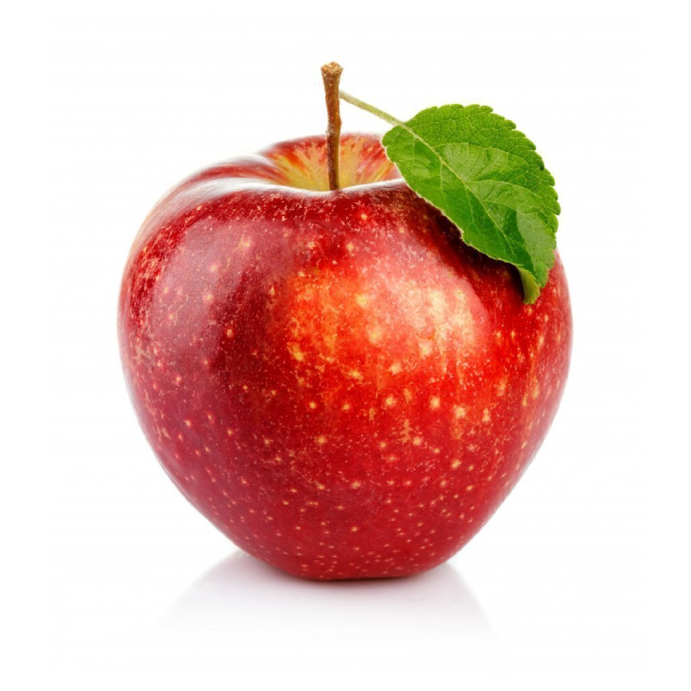

1-¿Cuál es la etiqueta principal utilizada para crear una tabla en HTML?
La etiqueta principal es "table" esta da principio y fin a una tabla en html
2-¿Qué etiqueta se utiliza para definir una fila en una tabla?
La etiqueta "tr" es aquella que le da principio y fin a una fila
3-¿Cuál es la etiqueta utilizada para crear una celda de encabezado en una tabla?
La etiqueta "th" es la que le da principio y fin al encabezado de una tabla
4-¿Cuál es la etiqueta utilizada para crear una celda de datos en una tabla?
La etiqueta "td" es la que le da principio y fin a una celda de dato en una tabla
5-¿Qué atributo se utiliza para especificar cuántas columnas debe abarcar una celda?
el atributo es "colspan" este permite abarcar mas de 2 columnas
6-¿Qué atributo se utiliza para especificar cuántas filas debe abarcar una celda?
el atributo es "rowspan" este permite abarcar 2 filas mas abajo
7- Si necesitamos crear una tabla con 10 filas ¿qué etiqueta y cuántas veces se debe utilizar para definir las filas?
primero que nada se debe utilizar la etiqueta "table" para crear la tabla, luego se debe utiliza la etiqueta "tr" para crear las filas.esta etiqueta la debemos utilizar 10 veces
Practicas
👉 TABLA 1
| nombre | Caloria | tipo | |
| Manzana | 93 | fruta |  |
| Milanesa | 256 | Carne | |
| Queso Cremoso | 342 | Lacteo | |
| Zapallo | 26 | Verdura | |
| Sandia | 30 | Fruta |